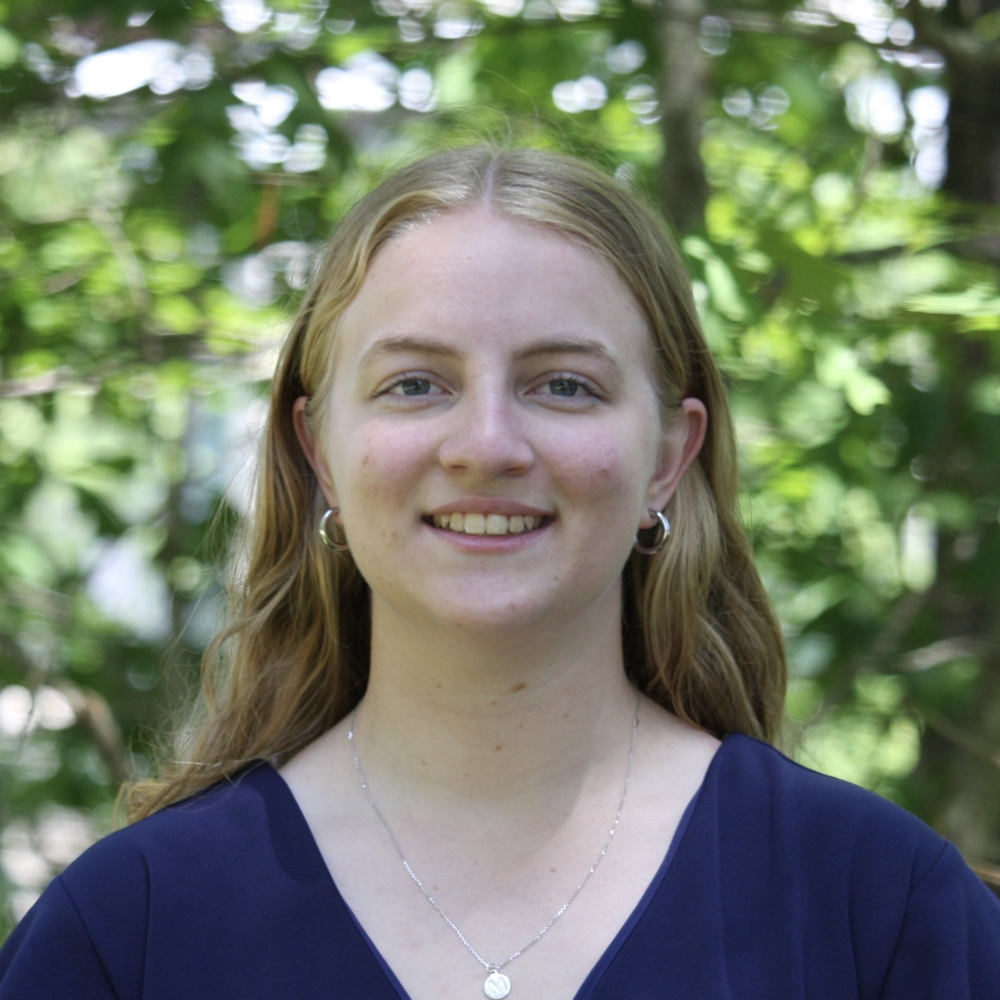

Antonio R. Porras, MSc, PhDDirector, MI2 - Medical Image Computing & Machine LearningAssistant Professor, Biostatistics & Informatics, Colorado School of Public Health Research Director, Plastic & Reconstructive Surgery, Children's Hospital Colorado |
|
Carsten Görg, PhDDirector, MI2 - Human-centered Design & Clinical TranslationAssistant Professor, Biostatistics & Informatics, Colorado School of Public Health |
|
Randy C. Miles, MD, MPHDirector, MI2 - Clinical and Radiological ResearchChief of Breast Radiology, Associate Chair for Research, Radiology, Denver Health Associate Professor, Radiology, CU Anschutz School of Medicine |
David Baraghoshi, MBiostats, PhDFaculty, Biostatistics, National Jewish Hospital |
|
Ines Alejandro Cruz-Guerrero, MSc, PhDPost-doctoral research fellow, Colorado School of Public Health |
Joanna Garcia, MPHProject coordinator, Denver Health |
|
Tom Stoughton, BSProfessional research assistant |
|
Connor Elkhill, BSResearch assistantStudent - PhD Computational Bioscience |
|
Isabelle Meredith, BSResearch assistantStudent - MS Biostatistics |
|
|  |
Madelynn Schina, BSResearch assistantStudent - PhD Biostatistics |
Joe Nagel, BSResearch assistantStudent - PhD Biostatistics |
|
Marcel Roux, BSResearch assistantStudent - MS Applied Mathematics |
Jiawei Liu, PhDPhD Biostatistics. Graduated in 2024. |
|
Joseph Froelicher, MSMS Biostatistics. Graduated in 2022. |
|
Abbas ShaikhResearch intern |